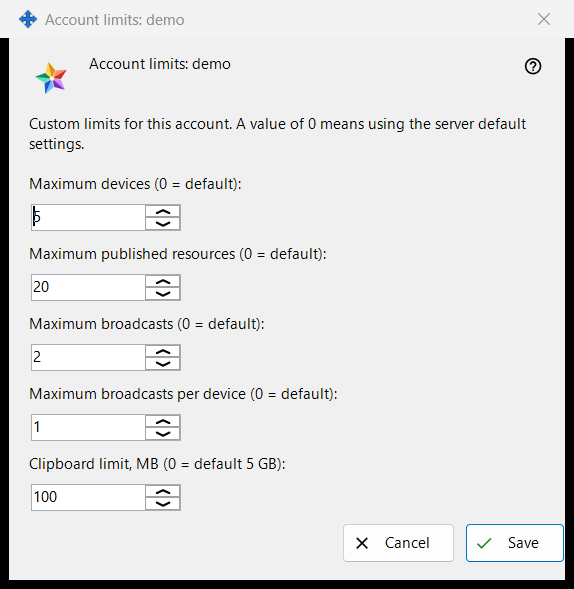
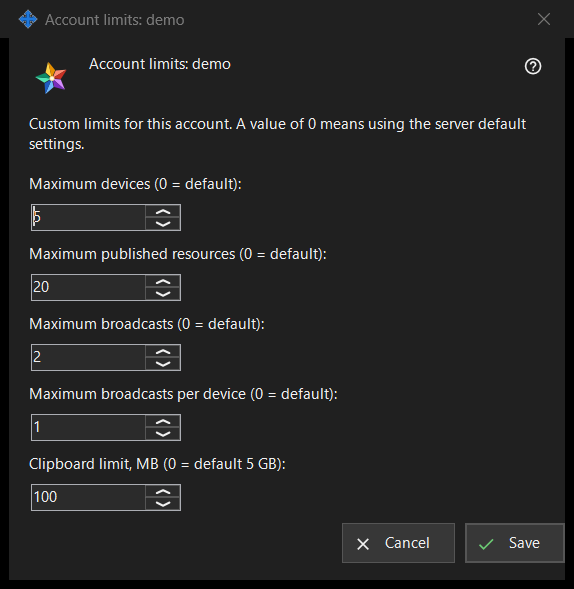

Account limits
What this is for
Sets individual limits for one account of the Media Exchange Server you run; a value left at 0 follows the server default. It opens from the 'Limits..' button under the account list on the Media Exchange Server page of the Share Manager settings, which appears once an account is selected. The caption names the account: 'Account limits: <login>'.


In this order
- Select the account and press 'Limits..'.
- Set a number for each limit you want to change and leave 0 for the server default.
- Press 'Save'.
- Read the result line: 'Limits for account <login> saved.'
The elements
Devices and resources
'Maximum devices (0 = default):' caps the devices that may be signed in to the account. 'Maximum published resources (0 = default):' caps the shared folders and other resources the account may publish on the server.
Broadcasts
'Maximum broadcasts (0 = default):' caps the broadcasts of the whole account, and 'Maximum broadcasts per device (0 = default):' caps what one device of it may start.
Clipboard limit
'Clipboard limit, MB (0 = default 5 GB):' sets the largest value the account can send to its clipboard on the server, in whole megabytes. A limit stored in smaller units, for example 512 KB, shows as 0 and keeps its exact size while you leave this field alone.
Save and cancel
'Save' replaces the account's own limits as a whole: each number above 0 becomes a limit, each 0 means the server default, and five zeros remove the account's overrides. 'Cancel' changes nothing. If the server refuses a value, the result line gives the reason, for example 'A limit is not allowed: it must be a whole number inside the range the server accepts.'
Manager settings · SFTP sharing settings · Exchange server settings